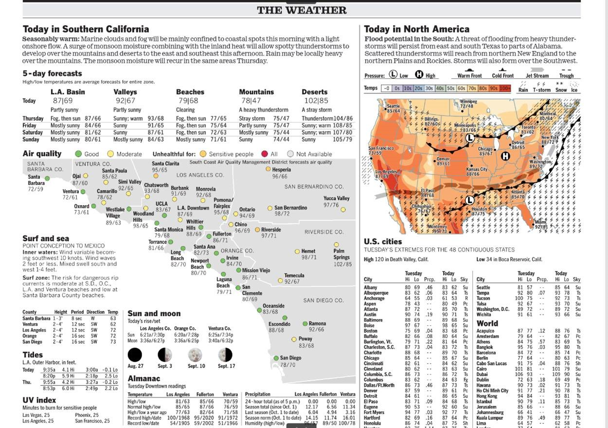

Today we will be focusing on the theory of data visualization.
1.1 Data, Information, and Knowledge
1.1.1 What is data?
Facts, or discrete elements of information.
quantitative or qualitative observations or descriptions
statistics or values represented in a form suitable for processing by computer
plural of datum (never ever use this, IMO, everything is data, singular or plural)
1.1.2 What is information?
The act of informing or the condition of being informed; communication of knowledge
Processed, stored, or transmitted data; structured data; data in context and significance
Stimuli that has meaning in some context for its receiver
1.1.3 What is knowledge?
General understanding or familiarity with a subject
Awareness of a subject; the state of being informed
Intellectual understanding; the state of appreciating the truth of information
1.2 Weather map example

Figure 1.1: WeatherMap
The visualization structures the underlying data into information. A good visualization communicates complex ideas with clarity, precision, and efficiency. It imparts knowledge.
1.2.1 Categories of information illustrated by the newspaper weather visualization
Air quality categories (e.g., unhealthy, moderate)
Flood potential
Warm front/cold front
Low/high pressure
dangerous rip currents risk is moderate/low
Why am I calling this information, and not data or insight?
Why isn’t this course called Environmental Information Visualization?
1.3 Abstraction
When we talk about the weather and use a data visualization, we are abstracting from THE WEATHER to a 2-D representation of some numbers, colors, pictures on a pixelized screen.
🌩️🌩️🌩️🌩️🌩️🌩️🌩️🌩️🌩️🌩️🌩️🌩️🌩️🌩️🌩️🌩️🌩️🌩️🌩️🌩️🌩️🌩️🌩️
Data visualization is an artistic abstraction.
Any environmental data visualization is not the thing itself. We are abstracting the thing itself in order to represent it in a condensed and structured way that conveys information. A thunderstorm emoji conveys the information about the weather in an abstract way, but is not the weather. However, we can put that thunderstorm emoji * on a map to provide spatial information * on a clock to provide temporal information * on a phone or an electronic device to communicate the weather in shorthand
Similarly, the abstraction of data into information allows for substantial control over the stylistic choices. Just like art has impressionism, realism, and surrealism, there are many different schools of thought about the appropriate ways to convey information.
In other words, the colors, symbols, shapes, and other stylistic choices encode and reveal truths about the data.
1.4 Ethics
Note
Avoid misrepresention!
Visualization methods can, purposefully or inadvertently, distort the underlying data’s meaning. There are many underlying causes that can cause this distortion. Distortion can be caused (un)intentionly by the designer of the visualization. The other side is that the visualization may not be understandable to the user. Broadly, these problems can be categorized as:
projection - 2-Dimensional cartographic representations (i.e., maps) distort either shapes, distances, or sizes
cognitive - problems associated with
graphical elements
clarity
over-simplification
under-simplification
heterogeneity of intended audience (e.g., language barriers, color palettes for color-blindness).
emotional - graphical design or content may be repellent or triggering
social - cross-cultural norms
directionality of reading (left-to-right vs. right-to-left)
context of color-scales (e.g., red-green in eastern vs. western cultures)
Understanding the intended audience and their norms is always key to open and empathetic communication, whether through words or visualizations. Multiple visualizations may be required for communication with a diverse (i.e., heterogeneous) audience.
1.5 What is the Baseline?
One of the most common distortions is changing the scale of the axis to distort magnitudes. Here’s an example.
The code below loads some R packages that are useful for data processing and visualization.
Attaching package: 'plotly'
The following object is masked from 'package:ggplot2':
last_plot
The following object is masked from 'package:stats':
filter
The following object is masked from 'package:graphics':
layout
This code imports monthly mean Mauna Loa CO2 data from NOAA GMD CMDL, renames the columns, and then displays the bottom five rows to make sure it shows what we think it should.
The CO2 data is displayed in #fig-KeelingCurve1 and #fig-KeelingCurve2. How does the y-axis scale affect the interpretation of the same dataset?
Code
#label: KeelingCurve1#fig-cap: The Keeling Curve showing monthly average CO~2~ concentrations (ppm) at Mauna Loa#warning: falseplot1 <- co2 %>%ggplot(aes(x = decDate, y = meanCO2)) +geom_line(color ='black', size =2) +theme_bw() +labs(x ='Year', y ='Concentration CO2 (ppb)')ggplotly(plot1)
Code
#label: KeelingCurve2#fig-cap: The Keeling Curve showing monthly average CO~2~ concentrations (ppm) at Mauna Loa#warning: falseplot2 <- plot1 +scale_y_continuous(limits =c(0,425))ggplotly(plot2)
A longer viewpoint is shown in Figure 1.2 going back well beyond the late 1950s using CO2 data from ice cores, sediments, and other paleo-climatological sources. It shows another y-axis scale.
How do the three different y-axis scales distort the user impression of the data?